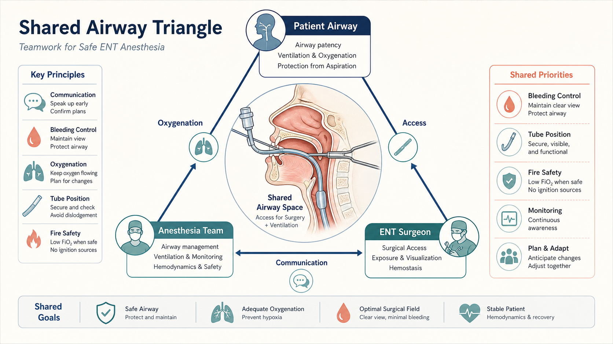
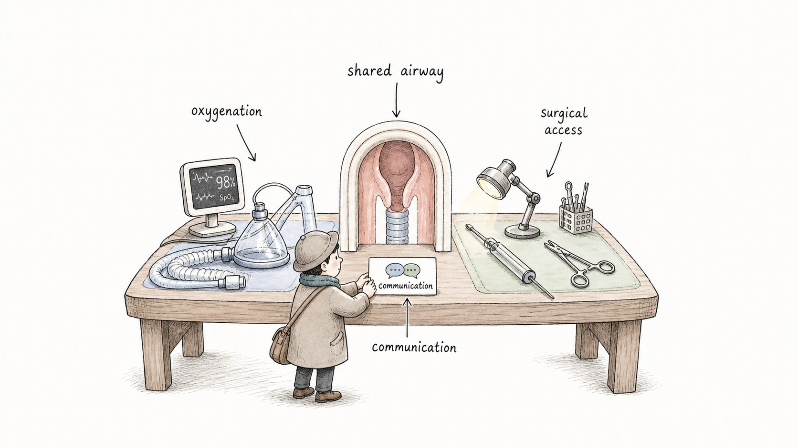
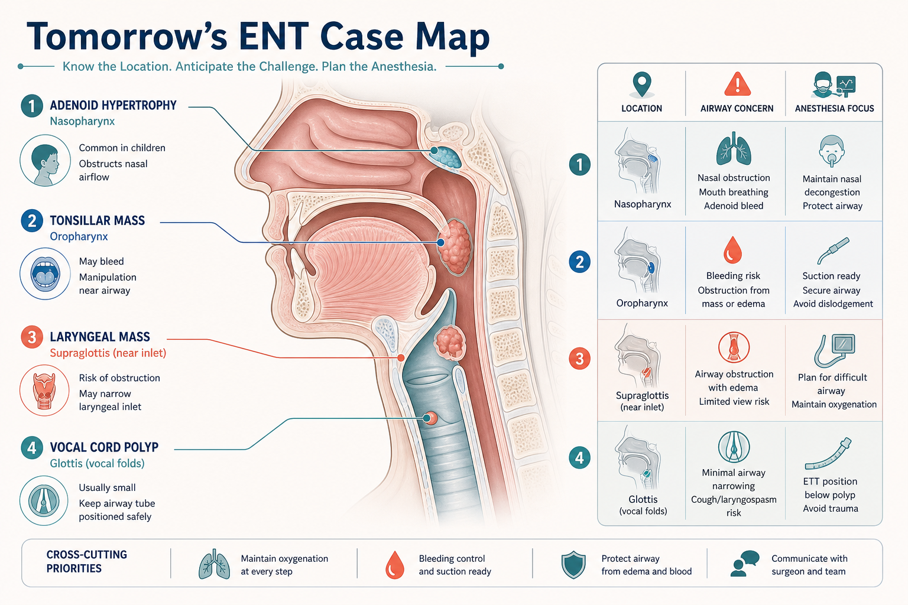
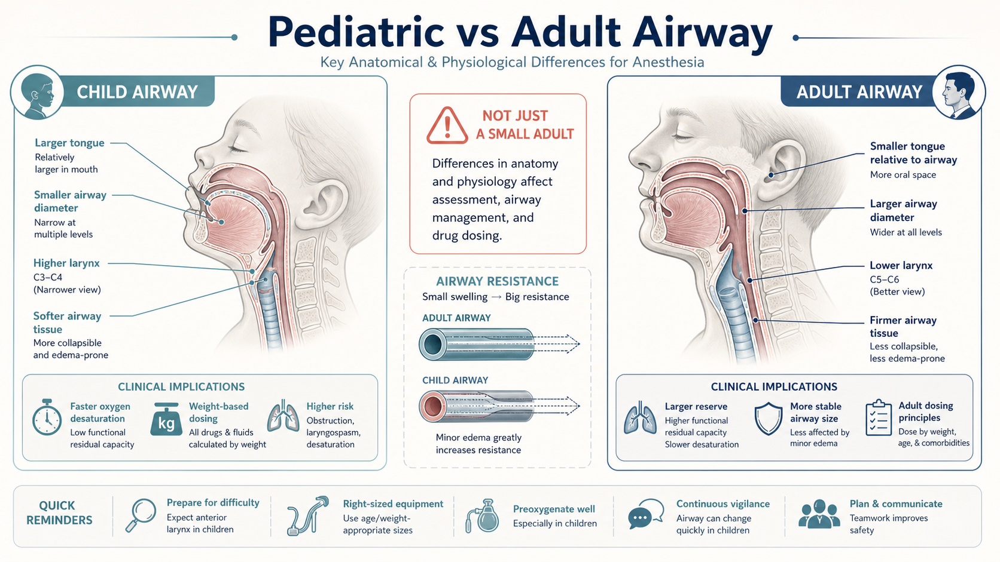
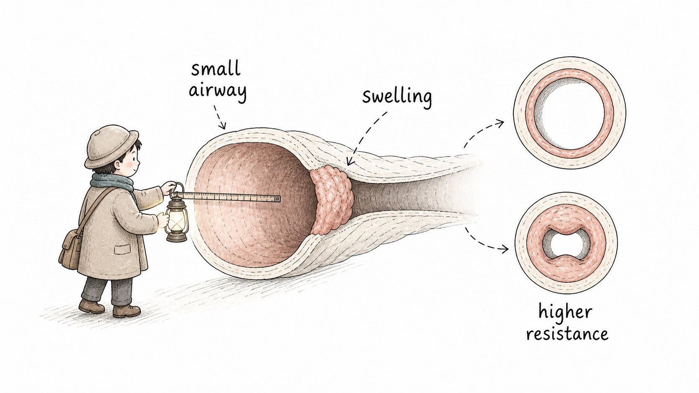
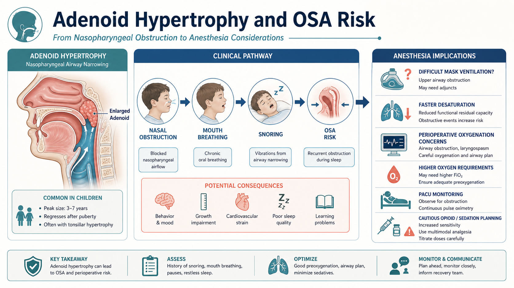
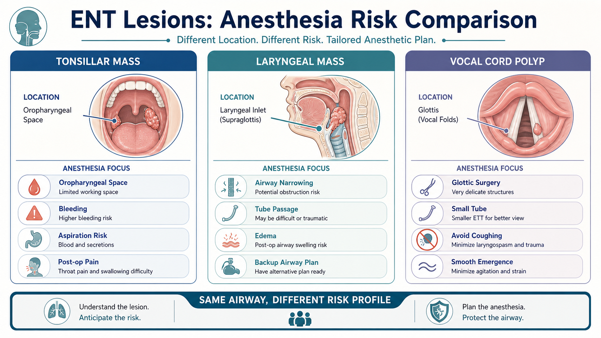
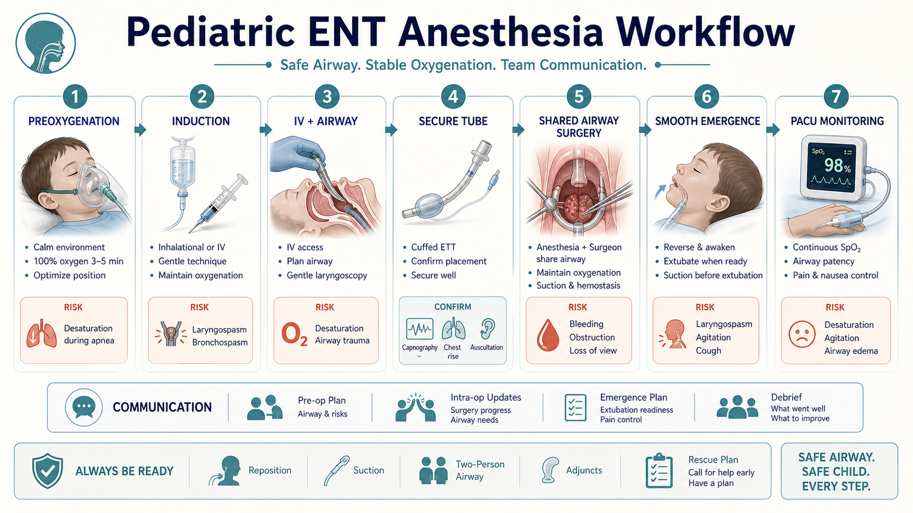
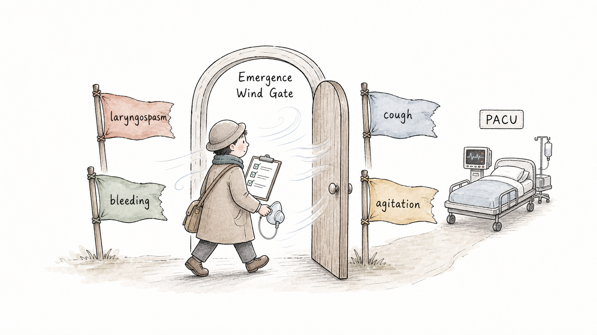
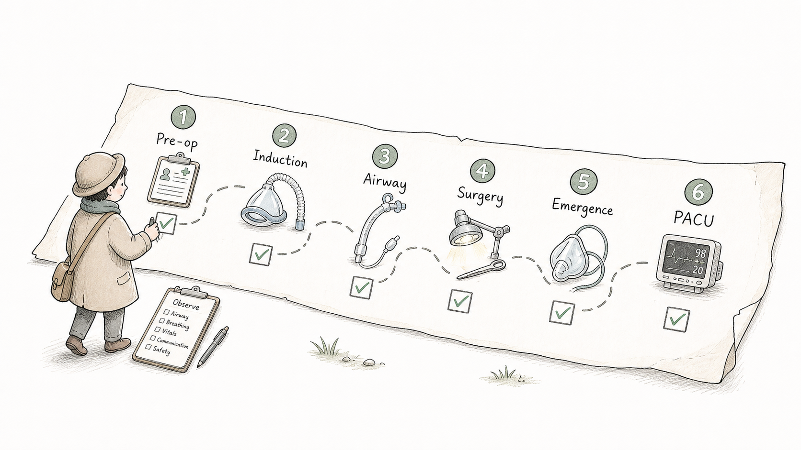

Start Here
ENT 麻醉第一句话：气道既是生命线，也是手术区域First Principle: The Airway Is Both Lifeline and Surgical Field
大多数手术里，麻醉医生管理气道，外科医生在其他部位操作。但耳鼻喉科手术常常不同：手术位置就在鼻咽、口咽、喉或声门附近。麻醉医生需要保证氧合和通气，外科医生需要清楚的手术视野，两者必须持续沟通。
In many operations, anesthesia manages the airway while the surgeon works elsewhere. ENT surgery is different: the surgical field may be in the nasopharynx, oropharynx, larynx, or glottis. The anesthesia team must maintain oxygenation and ventilation, while the surgeon needs access and visibility. Communication is not optional.

ENT Anesthesia Features
耳鼻喉科手术麻醉的特点What Makes ENT Anesthesia Different?

Tomorrow's Cases
明天手术内容：先建立解剖定位Tomorrow's Procedures: Build the Anatomy Map First
这几类手术都在上气道附近，但位置不同，麻醉关注点也不同。学生可以先问自己：病变在鼻咽、口咽、喉入口，还是声门？它会不会影响通气、插管、出血、苏醒？
These cases all sit near the upper airway, but the exact location changes the anesthesia focus. Ask: is the lesion in the nasopharynx, oropharynx, laryngeal inlet, or glottis? Could it affect ventilation, intubation, bleeding, or emergence?

Pediatric vs Adult
9 岁和 7 岁儿童：不是“小号成人”Children Are Not Just Small Adults
儿童气道更小，轻微水肿或分泌物就可能造成更明显阻力；儿童耗氧快、氧储备相对少，诱导、插管、拔管和苏醒期都更容易出现低氧。对 7 岁和 9 岁儿童，解剖差异比婴幼儿小一些，但 ENT 手术仍然会把风险集中到气道上。
Children have smaller airways, so mild swelling or secretions can create a larger increase in resistance. They also desaturate faster because oxygen reserve is limited relative to demand. In 7- and 9-year-old children, the differences are less dramatic than in infants, but ENT surgery still concentrates risk around the airway.


Adenoid Hypertrophy and OSA
腺样体肥大：从打鼾到围术期气道风险Adenoid Hypertrophy: From Snoring to Perioperative Airway Risk
腺样体肥大可导致鼻咽阻塞、张口呼吸、打鼾，部分儿童伴阻塞性睡眠呼吸暂停 `OSA`。这会影响术前评估、阿片类镇痛谨慎程度、苏醒期气道观察和 PACU 监测。
Adenoid hypertrophy may cause nasopharyngeal obstruction, mouth breathing, snoring, and sometimes obstructive sleep apnea (OSA). This affects pre-op assessment, opioid caution, emergence planning, and PACU monitoring.

Lesions and Vocal Cord Polyp
扁桃体肿物、喉肿物、声带息肉：同样是气道，风险不同Tonsil, Larynx, Vocal Cord: Same Airway, Different Risk Profile
扁桃体肿物主要影响口咽空间和出血风险；喉肿物更接近关键气道入口，可能影响插管和通气；声带息肉位于声门水平，手术常需要更好的显露和更平稳的苏醒，减少咳嗽和声带刺激。
A tonsillar mass mainly affects oropharyngeal space and bleeding risk. A laryngeal mass is closer to the critical airway inlet and may affect intubation or ventilation. A vocal cord polyp sits at the glottic level, where exposure and smooth emergence matter to reduce coughing and vocal fold irritation.

General Anesthesia Workflow
儿童 ENT 全麻流程：从预氧合到 PACUPediatric ENT General Anesthesia: From Preoxygenation to PACU
典型观察顺序包括：确认禁食、评估上呼吸道感染和 OSA 风险、预氧合、诱导、建立静脉通路和气道、固定导管、手术期间持续沟通、平稳苏醒、PACU 观察。具体药物和气道方式应由麻醉医生根据患者与手术决定。
A practical observation sequence is: confirm fasting, screen for URI and OSA risk, preoxygenate, induce anesthesia, establish IV and airway, secure the tube, communicate during surgery, aim for smooth emergence, and monitor in PACU. Specific drugs and airway choices are clinician- and case-dependent.

Emergence Risk
苏醒期不是“结束”，而是高注意力过渡Emergence Is Not the End; It Is a High-Attention Transition
ENT 儿童手术苏醒期要特别关注：喉痉挛、咳嗽、低氧、出血、分泌物、躁动、疼痛和恶心。拔管时机、吸引、镇痛、止吐和 PACU 交接都影响安全。
During emergence after pediatric ENT surgery, watch for laryngospasm, coughing, hypoxemia, bleeding, secretions, agitation, pain, and nausea. Extubation timing, suctioning, analgesia, antiemesis, and PACU handoff all matter.

Student Observation Route
学生自己怎么观察：六个节点How to Observe Independently: Six Checkpoints

Check Yourself
术后五个自测问题Five Post-Case Self-Check Questions
看完病例后，用 2 分钟回答：这台手术的病变位置在哪里？麻醉和外科如何共用气道？儿童和成人气道最大的不同是什么？为什么腺样体肥大要想到 OSA？苏醒期最需要警惕哪些问题？
After the case, answer in two minutes: Where was the lesion? How did anesthesia and surgery share the airway? What is the most important pediatric-versus-adult airway difference? Why does adenoid hypertrophy raise OSA concern? What are the key emergence risks?